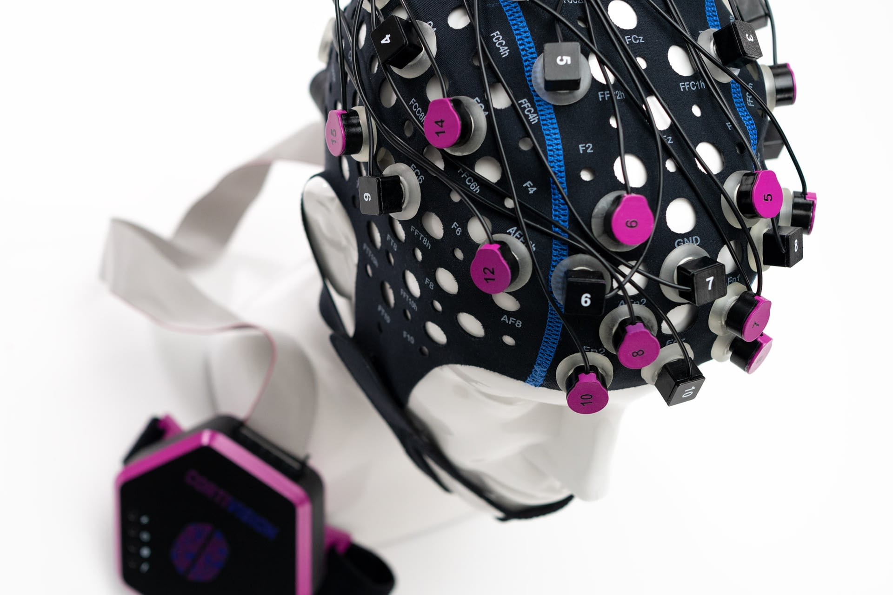
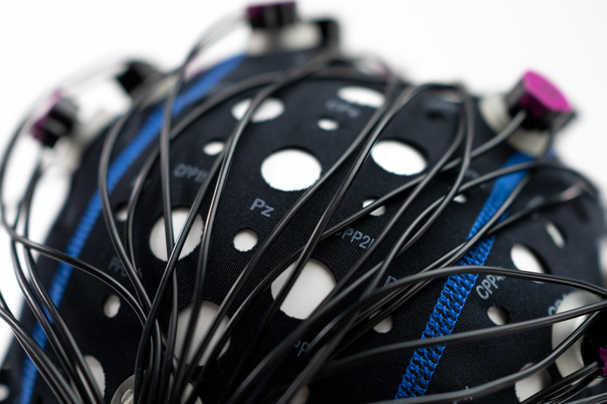

Полностью портативная система функциональной ближней инфракрасной спектроскопии.
Весь измерительный блок интегрирован в оптодную шапочку — мобильность, работа вне лаборатории, минимизация артефактов движения.
До 76 каналов, беспроводная передача 5.8 ГГц, синхронизация с ЭЭГ и айтрекингом через LSL.
Функциональная ближняя инфракрасная спектроскопия (fNIRS) — регистрирует изменения концентрации окси- и дезоксигемоглобина в коре головного мозга.
Ближнее инфракрасное излучение проникает через ткани черепа, отражается от коры и улавливается детекторами. Метод регистрирует гемодинамический отклик на нейрональную активность — аналогично фМРТ, но в портативном формате.
InfraMind II — полностью портативная система, где весь измерительный блок интегрирован в шапочку, что снижает помехи и упрощает настройку.
В отличие от стационарных fNIRS-комплексов, где блоки соединяются кабелями с регистратором, InfraMind II устанавливается непосредственно на оптодную шапочку.
Портативная fNIRS-система для исследований вне лаборатории:
мобильность, гиперсканирование до 200 человек, высокая частота дискретизации и полная мультимодальная совместимость.
Полностью портативная система, работа вне лаборатории: в классе, на рабочем месте, в клинике, в полевых условиях. Весь измерительный блок на шапочке — никаких кабелей к стационарному регистратору.
Синхронная запись с нескольких испытуемых — до 200 человек в одной сессии. Исследования социального взаимодействия, совместной деятельности и групповой динамики в естественных условиях.
До 1000 Гц при ограниченном числе каналов, до 60 Гц для всех каналов одновременно — значительно выше конкурентов. Детальный анализ динамики гемодинамического ответа.
Синхронизация с ЭЭГ, айтрекингом (Tobii, Pupil Labs), VR/AR через LSL (Lab Streaming Layer — протокол синхронизации). COM-порт для маркеров событий. Полная интеграция в мультимодальные протоколы.


Портативная fNIRS-система нового поколения. Измерительный блок полностью интегрирован в оптодную шапочку — никаких внешних кабелей и регистраторов.
Портативная fNIRS-система с максимальной частотой дискретизации на рынке, встроенной коррекцией артефактов и полной мультимодальной совместимостью.
Расскажем об InfraMind II, подберём конфигурацию под Ваши задачи и организуем демонстрацию.
Система применяется в нейронауке и когнитивных исследованиях, клинической реабилитации после инсульта, мониторинге в естественной среде, а также для интеграции с ЭЭГ, айтрекингом и VR/AR.